황찬우
백엔드 메인
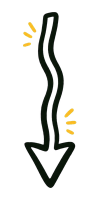
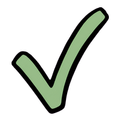
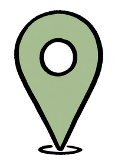
캘린더에 일정만 적어두면
오늘의 출발 시각과 경로를 매일 다시 계산해 알림으로 보내드려요.
도착하고 싶은 시각만 한 번 정해두면, 매일 아침 시스템이 오늘 교통 상황에 맞춰 출발 시각과 경로를 자동으로 다시 계산합니다.
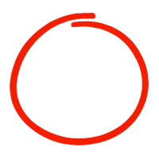
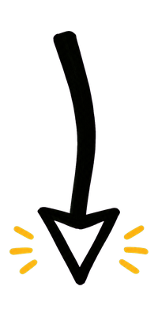
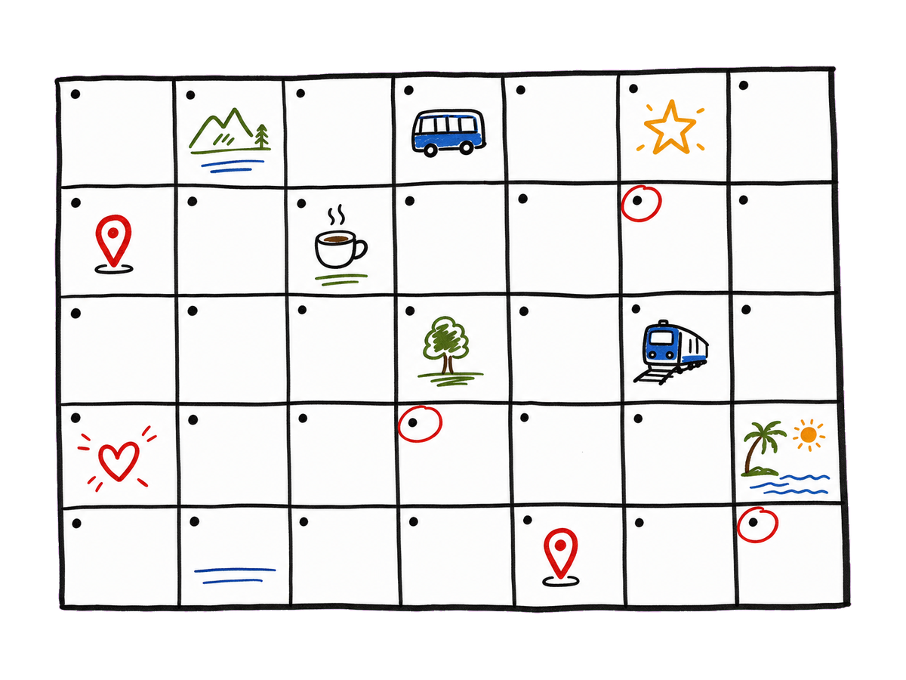
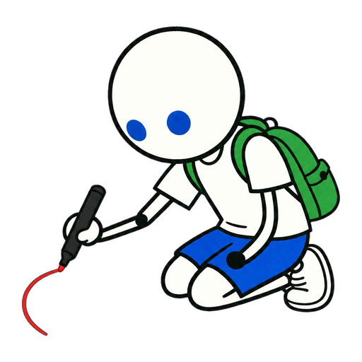
"국민대 정문" · "강남역 11번 출구" 처럼 주소도 그대로 검색해서 찍어두면, 다음 일정부터 매일 자동으로 같은 출·도착지를 씁니다.
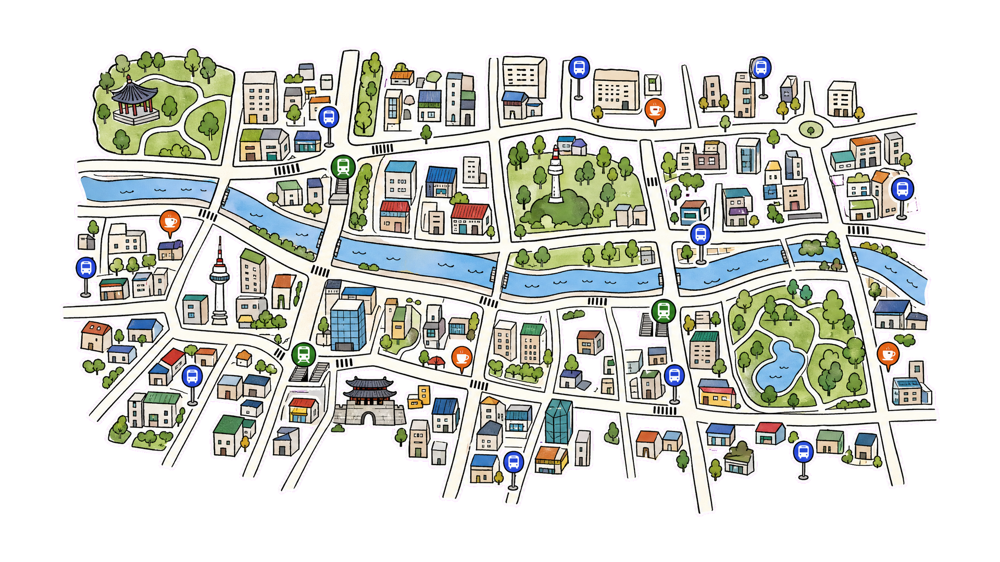
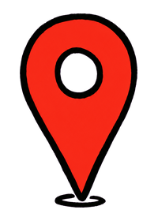
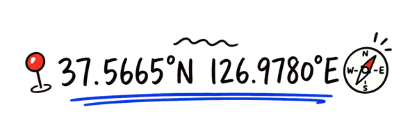
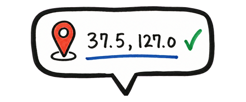
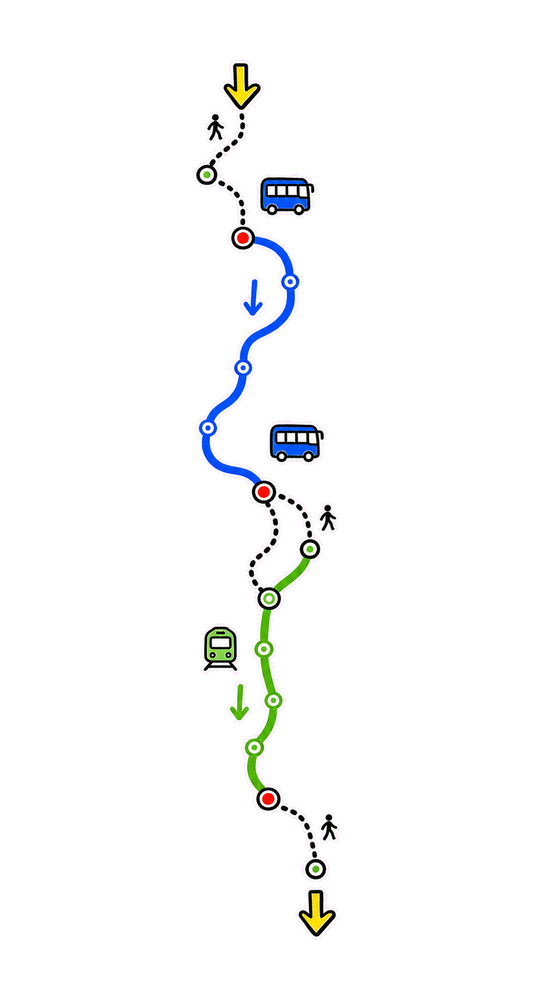
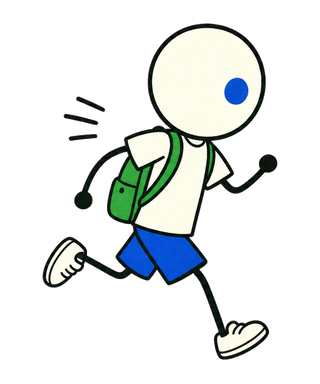
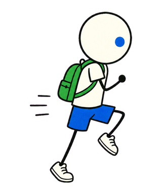
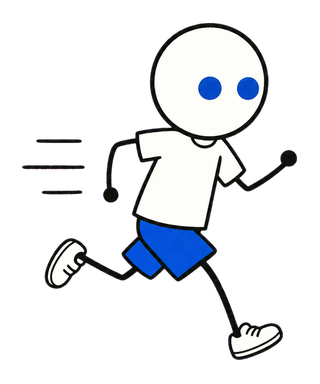
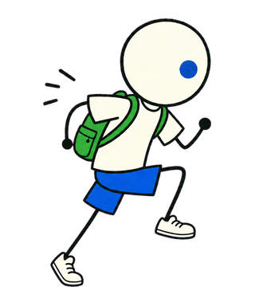
ODsay의 도로 위 곡선 + TMAP의 인도 위 곡선을 시간순으로 합성해, 도보 구간까지 진짜 인도 위에 그려진 경로를 보여드려요.
도착 시각을 맞추기 위해 오늘 출발해야 하는 시각을 매일 계산해 출발 직전 푸시 알림으로 보내드려요.
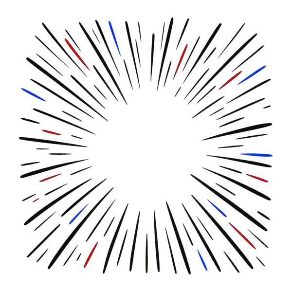
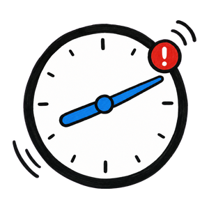
다음 일정 카드 · 월간 캘린더 · 합성 경로 지도 · 설정
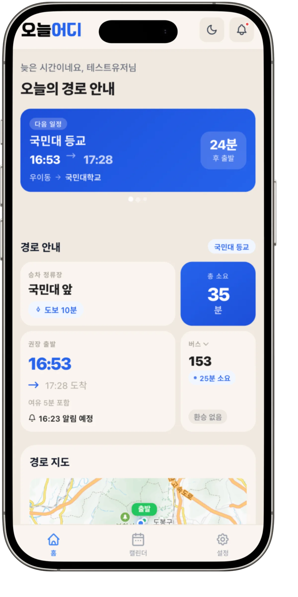
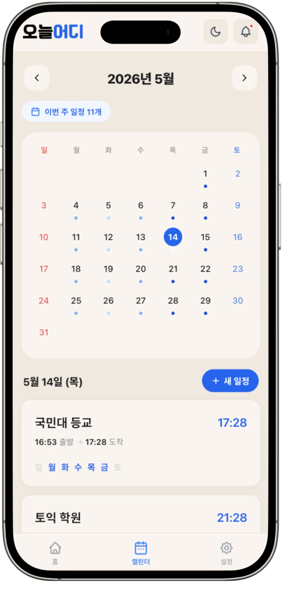
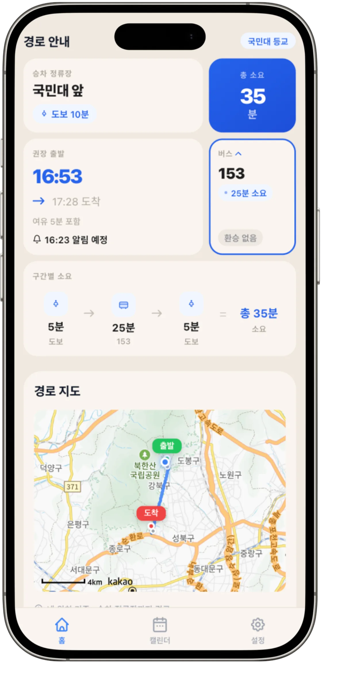
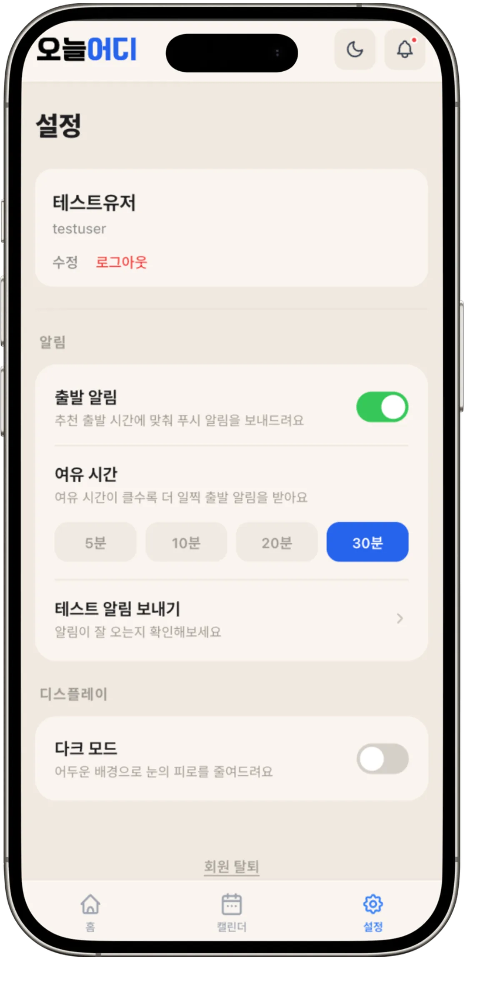
네 명이 각자 다른 영역을 맡아
한 줄의 알림으로 모았습니다.
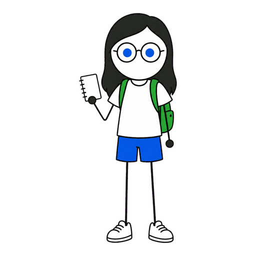
국민대학교 소프트웨어학부 캡스톤 디자인 I 2026 · 53팀
GitHub 에서 보기